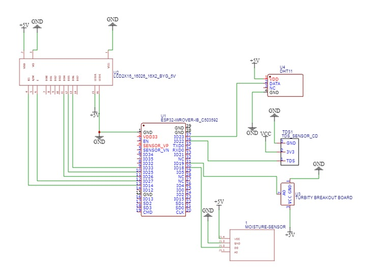
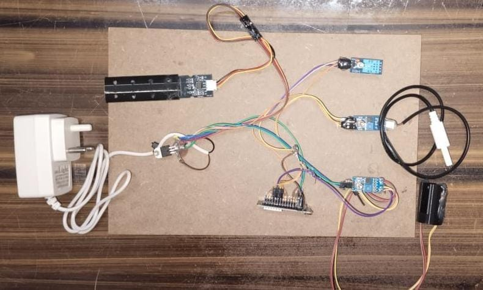

Portable Water Profile Water System
Team Members: Uday Kiran- Chandra Koushik- Parthav Sri Sai- Nanda Kowshik- Jeevan Kumar- Satwik - Murali Krishna - Raghu Aditya
Mentor: Dr.M.D. Kamalesh, Assistant Professor, CSE
Abstract
Water is essential for life, and its quality directly affects health, agriculture, and the environment. With rising pollution and industrial discharge, real-time water quality monitoring is crucial. This project introduces a Water Quality Monitoring System using ESP32 to measure parameters like turbidity, TDS, conductivity, and temperature/humidity (via DHT11), all displayed on mobile App
Objectives
- Develop a real-time water quality monitoring system using the ESP32 microcontroller.
- Integrate sensors to measure turbidity, TDS, conductivity, and temperature/humidity.
- Display collected data with the help of mobile Application for easy monitoring.
- Ensure water safety and quality for various environmental and practical applications.
Introduction
Water is essential for life, and its quality affects health, ecosystems, agriculture, and industry. Rapid industrialization and pollution have led to increased water contamination, posing serious risks. Traditional testing methods are often manual, expensive, and slow, making regular checks difficult in remote areas.
Proposed Methodology
The proposed model is a cost-effective, portable, and real-time water quality monitoring system based on the ESP32 microcontroller. It aims to overcome the limitations of existing solutions by combining multiple environmental sensors, LCD display/Mobile Application, and the potential for IoT integration
Hardware and Software
- ESP32 Microcontroller
- TDS Sensor
- Turbidity Sensor
- Conductivity Sensor
- DHT11 Sensor
- Arduino IDE
Conclusion
The ESP32-based Water Quality Monitoring System offers a cost-effective way to monitor water parameters in real time. It uses sensors for turbidity, TDS, conductivity, and temperature/humidity, with data shown on mobile Application.This helps in early contamination detection and supports smarter water management. Future upgrades could include cloud connectivity and mobile alerts.
Architecture

Implementation & Results
The system uses an ESP32 microcontroller connected to sensors like TDS, turbidity, conductivity, and DHT11 to measure water quality parameters. The data is displayed on a 16x2 LCD for real-time monitoring. Powered by a portable power source, the setup is compact and easy to carry, making it ideal for use in remote or field locations While the mobile app is still under development, initial tests showed improved accuracy and reduced search times. While the mobile app is still under

References
- IoT Based Water Quality Monitoring System, IRJET, Vol. 5, Issue 6, 2018.
- Water Quality Monitoring Using IoT and Arduino, IJERT, Vol. 9, Issue 8, 2020.
- Smart Water Quality Monitoring Using IoT, IJSER, Vol. 10, Issue 5, 2019.
Acknowledgment
We thank our mentor Kamalesh Sir for his constant support. We also thank our college, our faculty, and our teammates for their contributions and collaboration in making this project successful.